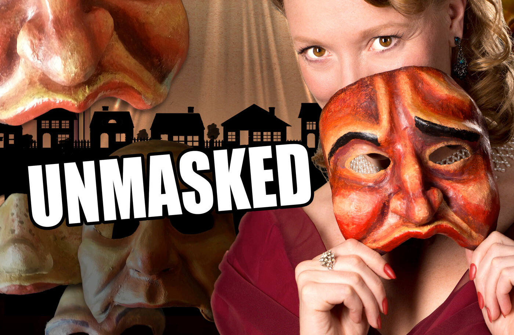
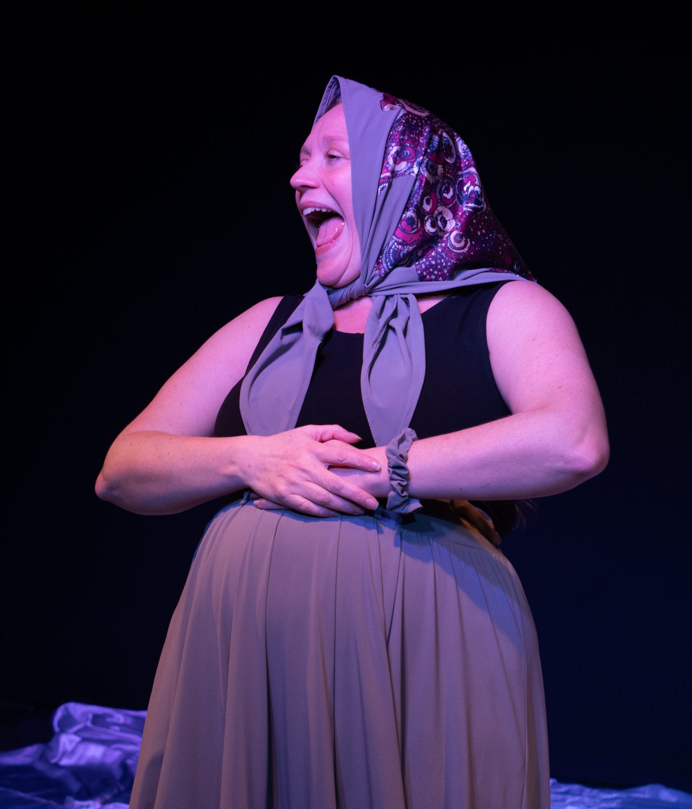
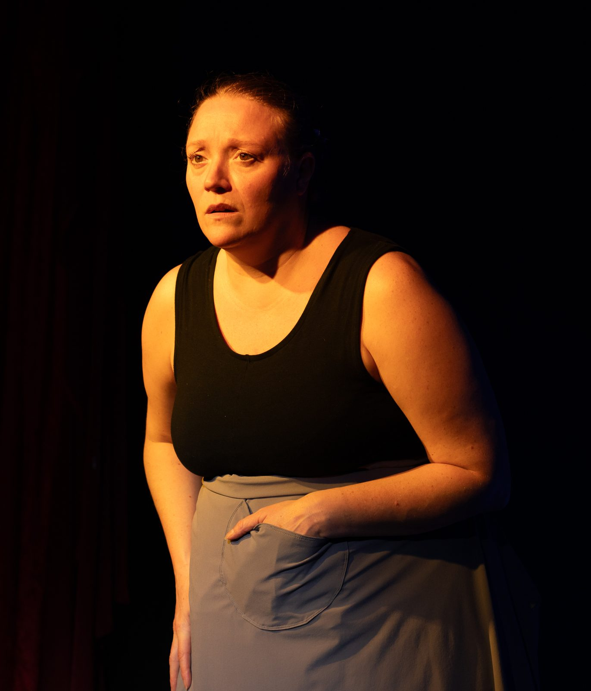
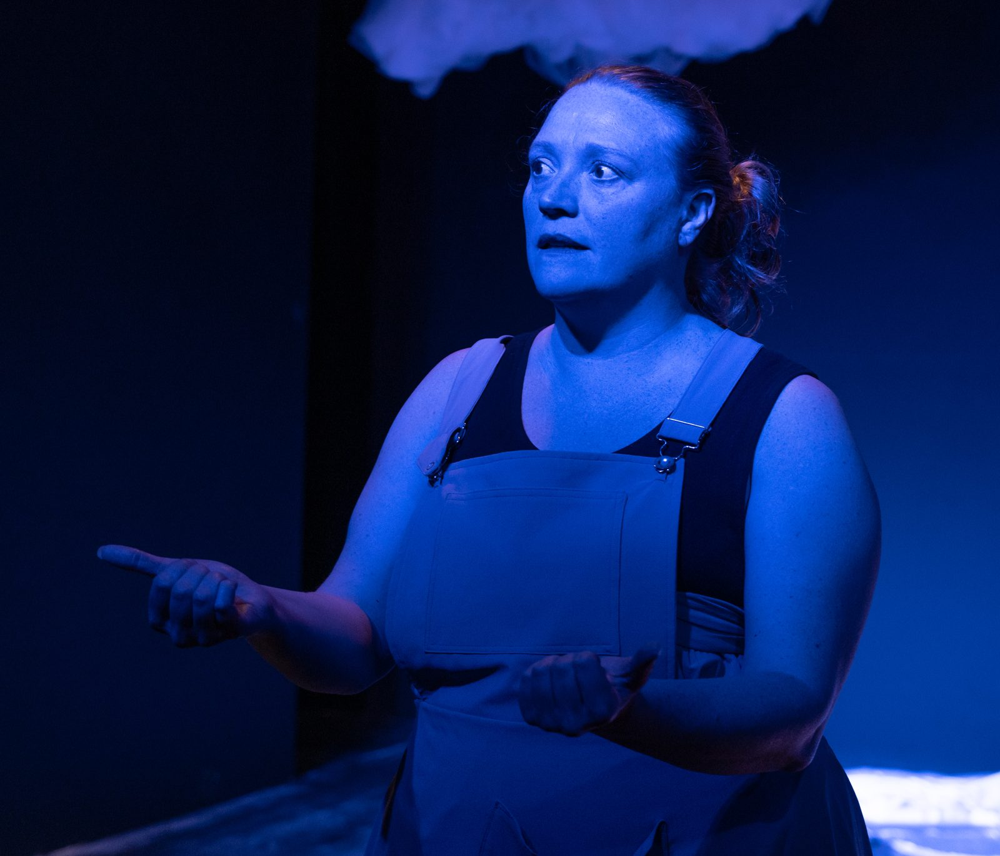
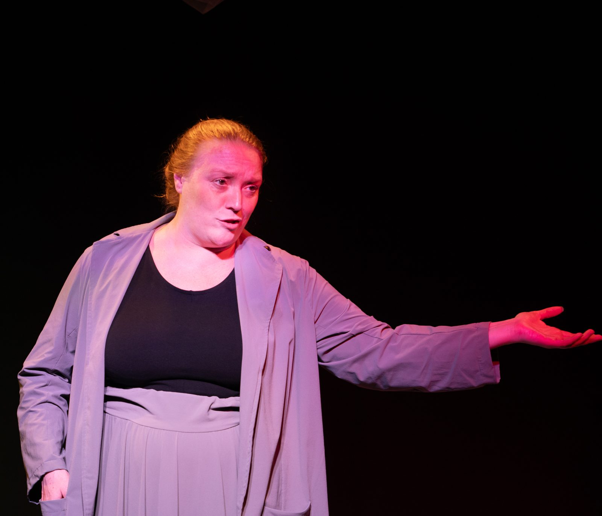
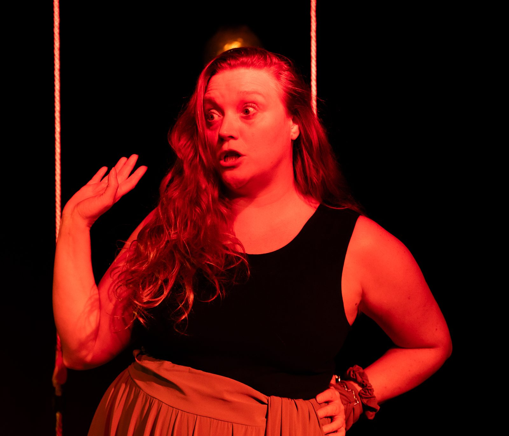
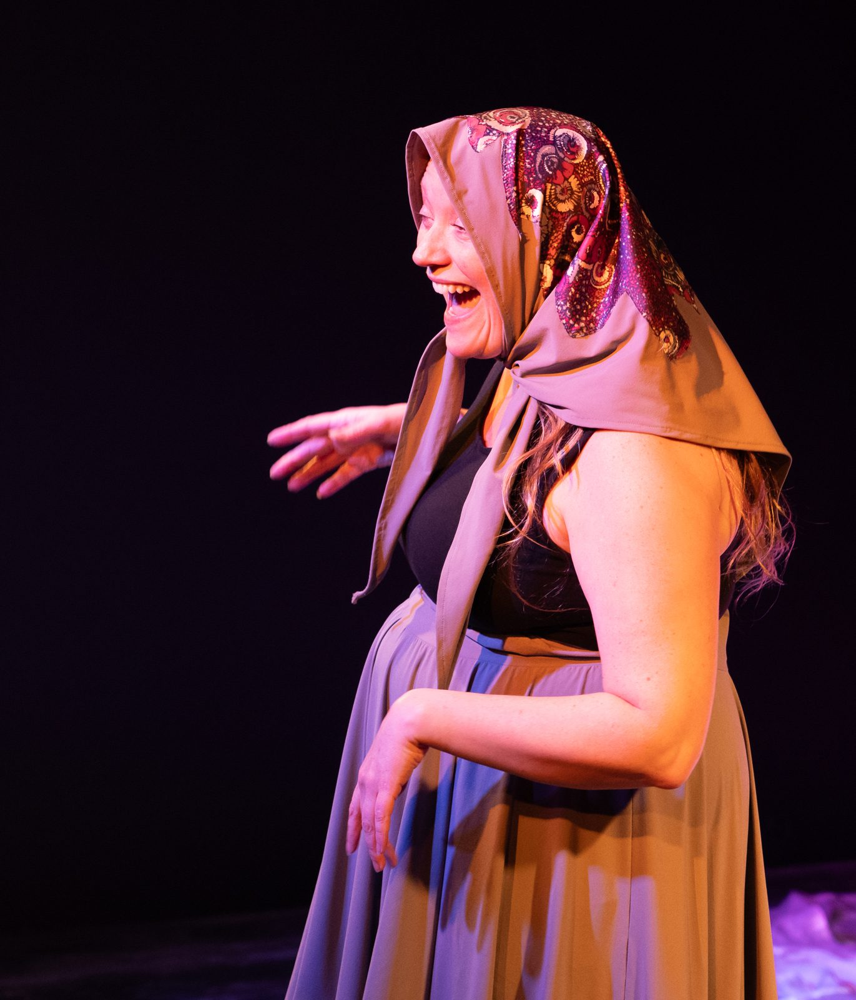

Singing, mime, dance, and a dozen voices. Ten years in the making. One performer's love letter to the community who showed up when it mattered most.
Mura shape-shifts through an entire New Jersey neighborhood without a costume change or a set piece, moving between voices, accents, and bodies so fluidly that reviewers describe it as effortless. Tap a name to meet them.
When Kate Mura was young, her father was badly hurt in a freak accident. The Play About My Father is her love letter to everyone who showed up: family, friends, chosen family, and a whole New Jersey community.
Mura narrates as Stella, her jovial, babushka-wearing great-aunt who has seen her share of tragedy but is still delighted by humanity. Talking about the family's mounting medical bills, Stella chortles as she recalls sneaking food from the racetrack buffet to help stretch a strained budget.
Mura seamlessly shape-shifts from one persona to another, in a show that is achingly human and uplifting.
Willamette WeekIn one of the darkest scenes, Mura is bathed in red light, singing Nirvana's "Come As You Are" while miming taking pills. Elsewhere, moving light suggests shifting clouds and ocean foam, a recurring image tied to the water where her father was hurt, and a reminder that humans cannot control nature. It closes with Mura making eye contact with the audience and inviting everyone to go out and say nice things to each other.
A preternaturally gifted performer who tells an achingly human and uplifting story.
Willamette WeekA warm and compassionate show that demonstrates the power of kindness to lift people up in their moments of greatest need.
BroadwayWorldMura is an open-hearted performer who invites the audience in. I felt like I was getting to know real people.
BroadwayWorldA dress that rivals Cinderella's for magical properties. It looks like a plain gray frock, then reveals itself as a feat of sewing engineering.
BroadwayWorld, on the costume designTransformation is my passion…
Kate Mura is an actor, a union stagehand, designer, and coach. She chooses theatre as her life's work because it constantly proves that creating other worlds is possible, and it's her quest, in life and art, to help build the world she wants to live in: one that's beautiful, supportive, and sustainable through tragedy and pain.
When she's not in a theatre, she can be found exploring her surroundings, reading tarot cards, and being naked in nature.






Suburban Tribe: Unmasked, the earlier mask-show version of this story, its full touring history, and vintage press, all live in the archive.
Currently booking for 2027.